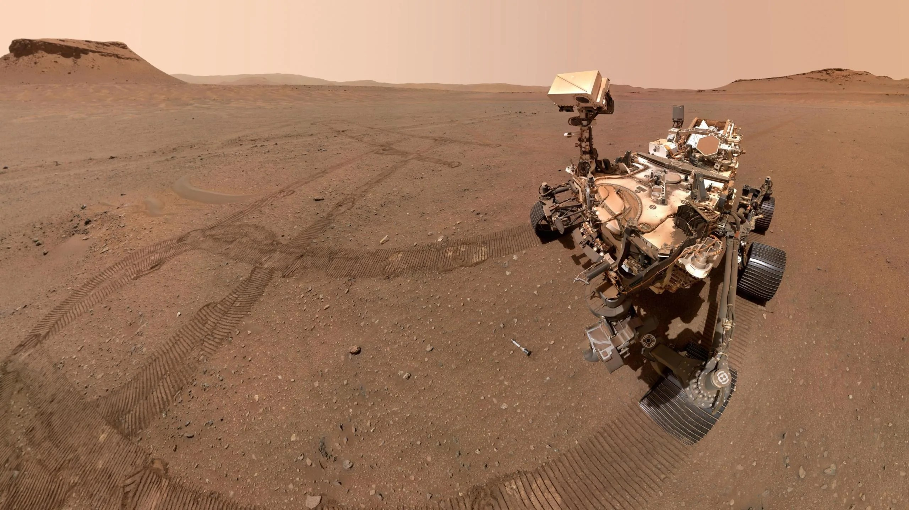
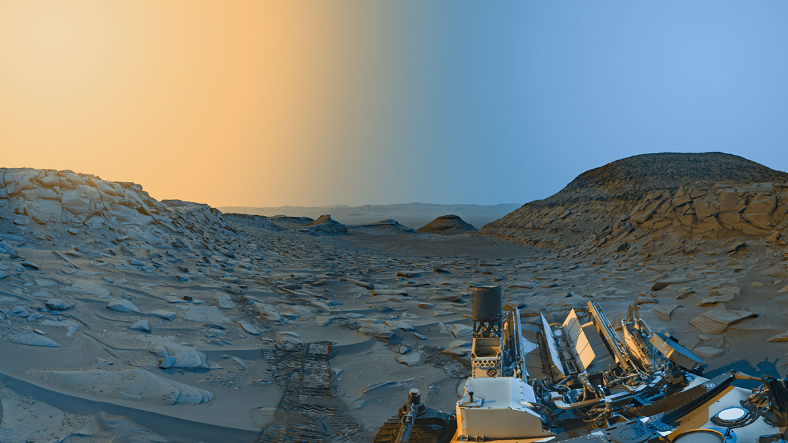

Galería de Marte



Marte es el cuarto planeta del Sistema Solar y es conocido como el "Planeta Rojo" debido a su superficie cubierta de óxido de hierro. Tiene dos lunas pequeñas: Fobos y Deimos.
üöÄ Es uno de los principales candidatos para la exploraci√≥n y colonizaci√≥n humana en el futuro.